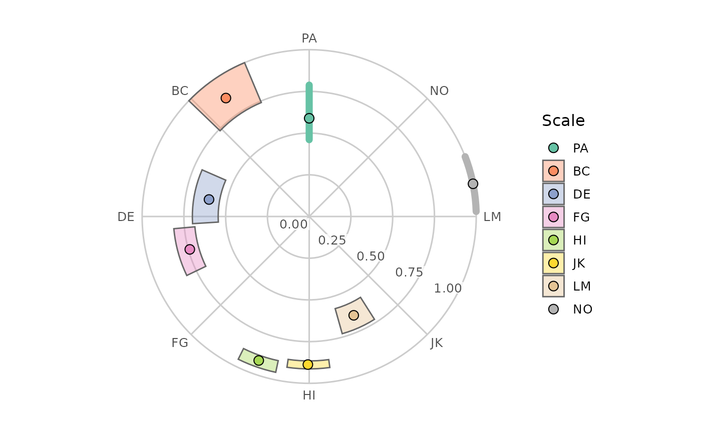

Draw the estimated item configuration of a cpm_fit() object on the circular
canvas from ggcircumplex(). Each scale is placed at its estimated angle
(θ), at a radius given by its communality (ζ², the share of
its variance explained by the common circumplex factors), so items that the
model explains well sit near the outer ring and items it explains poorly sit
near the centre. The canvas spokes mark the theoretical angles supplied to
cpm_fit(), so the gap between a point and its spoke shows how far the
estimated angle departed from the hypothesised one. Where the confidence
intervals are estimable, a wedge spans each item's angle CI (angularly) and
communality CI (radially).
Usage
# S3 method for class 'circumplex_cpm'
plot(x, amax = 1, angle_labels = NULL, legend = TRUE, ...)Arguments
- x
A
circumplex_cpmobject fromcpm_fit().- amax
A single positive number giving the communality represented by the canvas's outer ring (default = 1, the maximum possible communality).
- angle_labels
Either
NULLor a character vector of spoke labels, one per scale in the fitted order.NULL(default) labels the spokes with the scale names.- legend
A logical: draw a legend keying the colours to the scale names (default =
TRUE).- ...
Not used. Supplying an unrecognized argument produces a warning.
Examples
# \donttest{
data("jz2017")
scales <- c("PA", "BC", "DE", "FG", "HI", "JK", "LM", "NO")
set.seed(12345)
fit <- cpm_fit(jz2017, scales = scales, boots = 100)
#> Warning: CPM Hessian is ill-conditioned (condition number 1.83e+14): angles may be clustered or parameters weakly determined.
#> Warning: 2 of 100 bootstrap resamples were excluded (0 with a degenerate or non-positive-definite correlation matrix, 2 failing the convergence acceptance criterion); the confidence intervals are based on the remaining 98 replicates and are conditional on estimability.
plot(fit)

# }